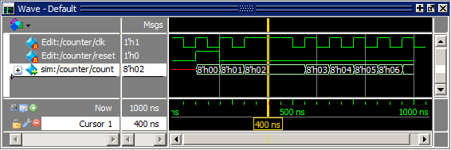

Once
you have finished editing the waveforms, you can run the simulation.
Procedure
- Add
a design signal.
- In
the Objects window, right-click count and
select Add Wave.
The
signal is added to the Wave window.
- Run
the simulation.
- Enter
the following command at the Questa SIM>
prompt.
run 1000
The
simulation runs for 1000 ns and the waveform is drawn for sim:/counter/count (Figure 1).
Figure 1. The counter Waveform
Reacts to Stimulus Patterns
Look
at the signal transitions for count from
300 ns to 500 ns. The transitions occur when clk goes
high, and you can see that count follows
the pattern you created when you edited clk by
stretching and deleting edges.
- Quit
the simulation.
- In
the Main window, select , and click Yes
to confirm you want to quit simulating. Click No if
you are asked to save the wave commands.